⚖ TÍTULO I - DA APLICAÇÃO DA LEI PENAL MILITAR (Art. 1º ao 28)
⚖ TÍTULO III - DA IMPUTABILIDADE PENAL (Art. 48 ao 52)
⚖ TÍTULO IV - DO CONCURSO DE AGENTES (Art. 53 e 54)
⚖ TÍTULO V - DAS PENAS (Art. 55 ao 109)
⚖ TÍTULO VI - DAS MEDIDAS DE SEGURANÇA (Art. 110 e 120)
⚖ TÍTULO VII - DA AÇÃO PENAL (Art. 110 e 120)
⚖ TÍTULO VIII - DA EXTINÇÃO DA PUNIBILIDADE (Art. 123 e 135)
TÍTULO II
DO CRIME (Art. 29 ao 47)
🎥 08. Do Crime- Parte 1
O resultado de que depende a existência do crime somente é imputável a quem lhe deu causa. Considera-se causa a ação ou omissão sem a qual o resultado não teria ocorrido. (Art. 29 CPM)
Acontecimento jurídico que, em princípio, vem modificar ou alterar uma situação firmada em fato anterior, para que se possa tomar uma nova orientação ou para que se permita a adoção de medida que desfaça ato, ou medida anterior, ou que venha imprimir novo rumo à solução de uma contenda judicial.
A superveniência de causa relativamente independente exclui a imputação quando, por si só, produziu o resultado. Os fatos anteriores, imputam-se, entretanto, a quem os praticou.(Art. 29º, §1º)
A omissão é relevante como causa quando o omitente devia e podia agir para evitaro resultado. O dever de agir incumbe a:
📍 quem tenha por lei obrigação de cuidado, proteção ou vigilância;
📍 a quem, de outra forma, assumiu a responsabilidade de impedir o resultado;
📍 e a quem, com seu comportamento anterior, criou o risco de sua superveniência.
(Art. 29º, §2º)
A omissão será penalmente relevante quando houver uma lei que determine a prática de determinada ação em certo contexto e atribua a essa inatividade uma pena. Nesses casos, a omissão, que não consiste em apenas ficar parado, mas também em realizar qualquer outra conduta distinta daquela imposta pela norma, será típica sob um prisma objetivo, desde que possível a prática da conduta exigida pela lei.
Pode ser classificadas:
📍 como próprias: Quando se deixa de prestar assistência quando possível fazê-lo.
📍 e as imprórpias: é aquela por meio da qual se imputa um tipo penal comissivo (de ação) àquele que se omite, como se ele tivesse causado positivamente o resultado ou o risco previsto na norma.(Exemplo a mãe que por não cuidar de seu filho lhe causa a morte por desnutrição) (Art. 29º, §2º)
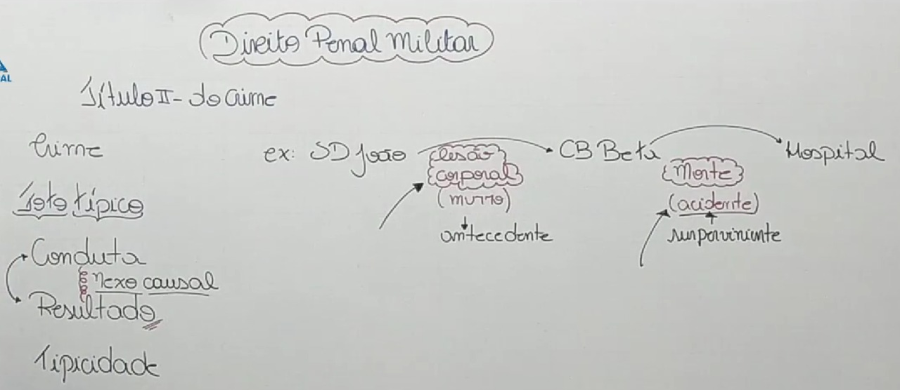
É uma expressão em latim que pode ser traduzida para “itinerário do crime” ou “caminho do crime”.
Só é verificado nos crimes dolosos, os quais possuem planejamento e vontade por parte do agente.
Enquanto nos crimes culposos ele não é possível porque ocorrem por imperícia, imprudência ou negligência.
📍 A Cogitação (Nessa etapa não é considerado crime)
📍 Os Atos preparatórios (Normalmente não é crime, mais pode ser considerado dependendo dos atos)
📍 Início dos atos de execução
📍 A Consumação (ou tentativa)
Quando nêle se reúnem todos os elementos de sua definição legal; (Art. 30, I)

🎥 09. Do Crime- Parte 2
Tentado, quando, iniciada a execução, não se consuma por circunstâncias alheias à vontade do agente.
Pena de tentativa: Parágrafo único. Pune-se a tentativa com a pena correspondente ao crime, diminuída de um a dois terços, podendo o juiz, no caso de excepcional gravidade, aplicar a pena do crime consumado
(Art. 30, II)
O agente que, voluntariamente, desiste de prosseguir na execução ou impede que o resultado se produza, só responde pelos atos já praticados.(Art. 31)

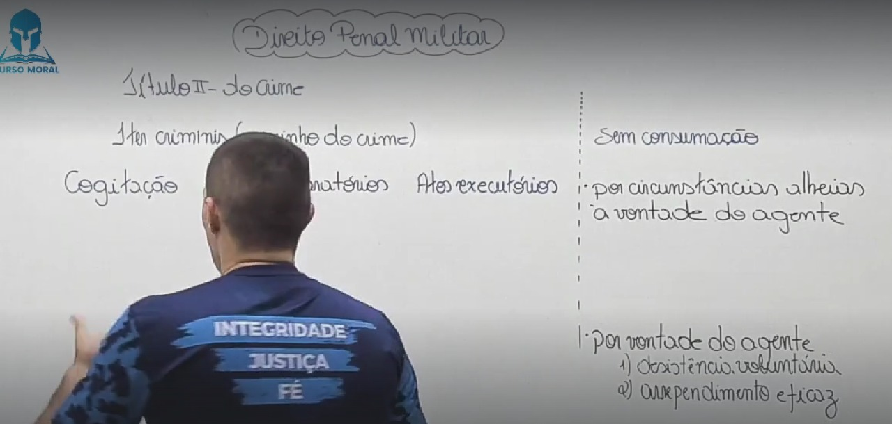
O arrependimento posterior é previsto no Código Penal da seguinte maneira:
📍 Art. 16 - Nos crimes cometidos sem violência ou grave ameaça à pessoa, reparado o dano ou restituída a coisa, até o recebimento da denúncia ou da queixa, por ato voluntário do agente, a pena será reduzida de um a dois terços.
Não tem previsão na parte geral.
📍 Art. 72. São circunstâncias que sempre atenuam a pena:
📍 III - ter o agente:
📍 b) procurado, por sua espontânea vontade e com eficiência, logo após o crime, evitar-lhe ou minorar-lhe as consequências, ou ter, antes do julgamento, reparado o dano;
📍 Art. 73. Quando a lei determina a agravação ou atenuação da pena sem mencionar o quantum, deve o juiz fixá-lo entre um quinto e um terço, guardados os limites da pena cominada ao crime.
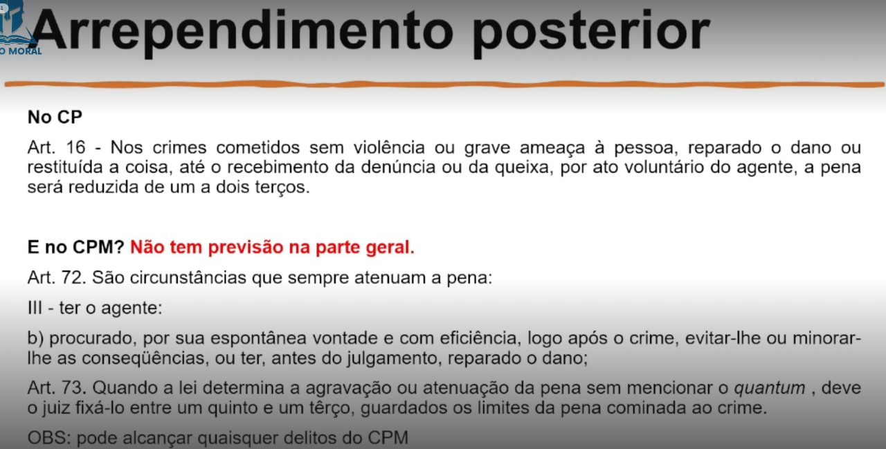
Quando, por ineficácia absoluta do meio empregado ou por absoluta impropriedade do objeto, é impossível consumar-se o crime, nenhuma pena é aplicável.(Art. 32)

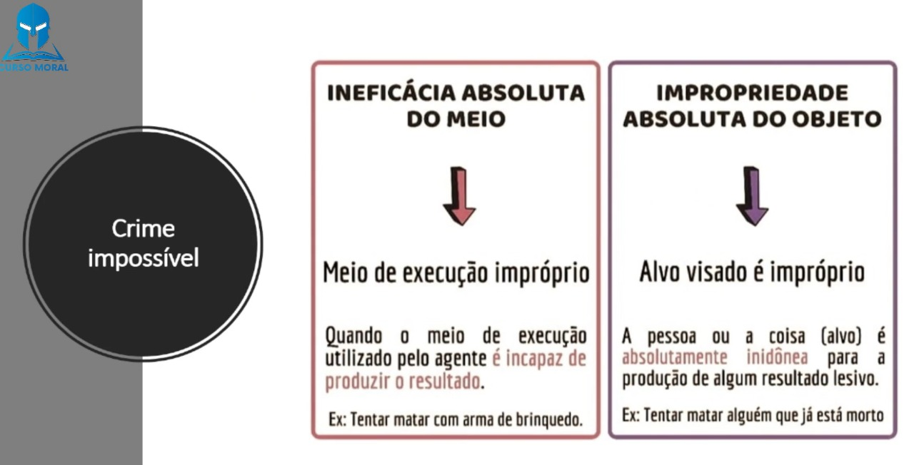
Ele tem 2 formas:
📍 I - doloso, quando o agente quis o resultado ou assumiu o risco de produzi-lo;
📍 II - culposo, quando o agente, deixando de empregar a cautela, atenção, ou diligência
ordinária, ou especial, a que estava obrigado em face das circunstâncias, não prevê o
resultado que podia prever ou, prevendo-o, supõe levianamente que não se realizaria ou
que poderia evitá-lo. (Art. 33)
Parágrafo único. Salvo os casos expressos em lei, ninguém pode ser punido por fato
previsto como crime, senão quando o pratica dolosamente. (Art. 33)


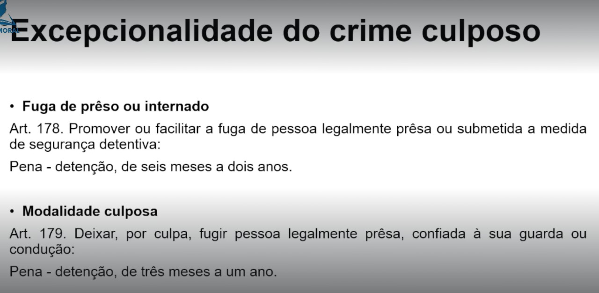
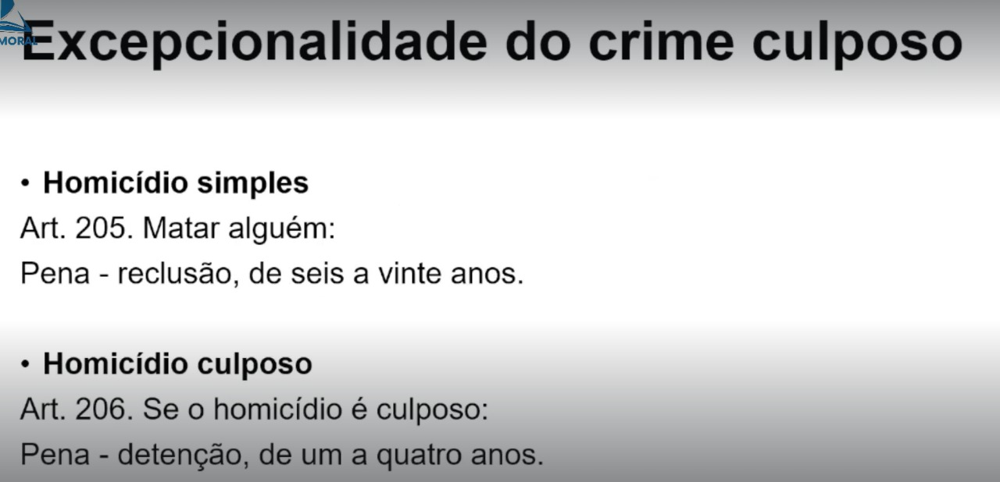
🎥 10. Do Crime- Parte 3
A pena pode ser atenuada ou substituída por outra menos grave quando o
agente, salvo em se tratando de crime que atente contra o dever militar, supõe lícito o fato, por ignorância ou erro de interpretação da lei, se escusáveis. (Art. 35)
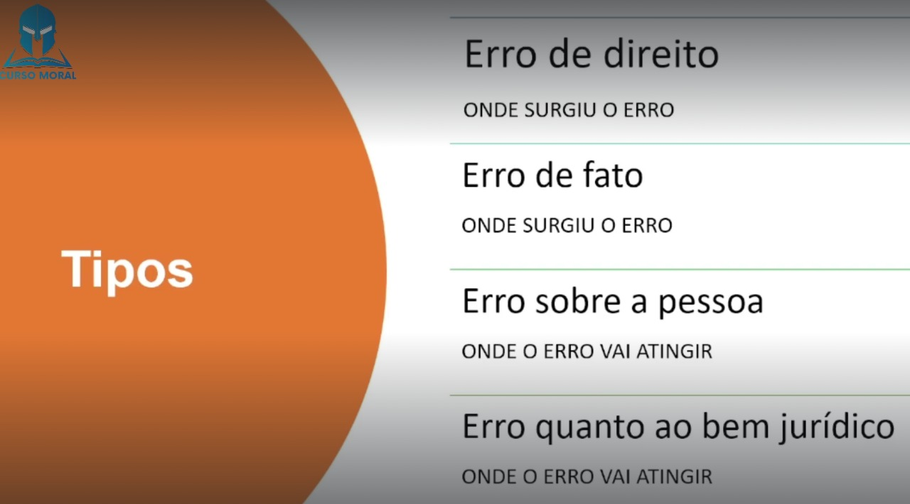


É isento de pena quem, ao praticar o crime, supõe, por erro plenamente
escusável, a inexistência de circunstância de fato que o constitui ou a existência de
situação de fato que tornaria a ação legítima. (Art. 36)
💡 OBS: Erro de fato: Isenta de Pena
Erro de Direito: Atenua / substitui
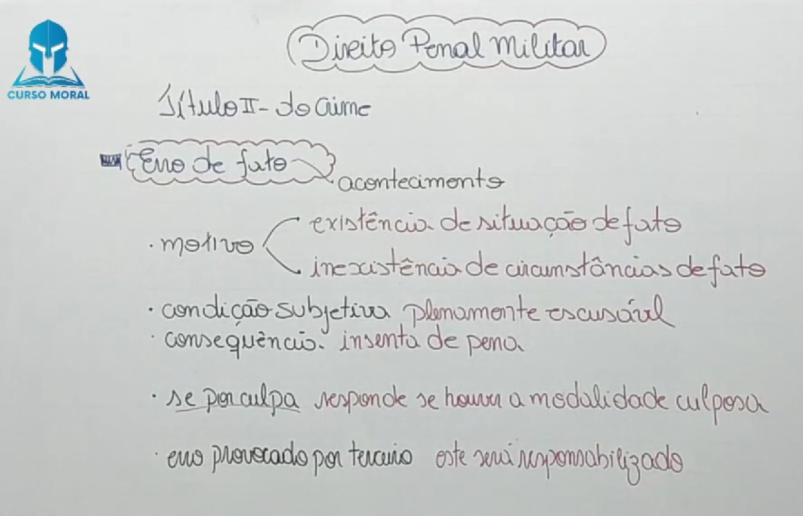
Se o êrro deriva de culpa, a êste título responde o agente, se o fato é punível como
crime culposo. (Art. 36, §1º)
Se o êrro é provocado por terceiro, responderá êste pelo crime, a título de dolo ou
culpa, conforme o caso. (Art. 36, §2º)
🎥 11. Do Crime- Parte 4
Quando o agente, por êrro de percepção ou no uso dos meios de execução, ou
outro acidente, atinge uma pessoa em vez de outra, responde como se tivesse praticado o
crime contra aquela que realmente pretendia atingir. Devem ter-se em conta não as
condições e qualidades da vítima, mas as da outra pessoa, para configuração, qualificação
ou exclusão do crime, e agravação ou atenuação da pena(Art. 37)
💡 OBS: Crime Doloso
É o desvio no ataque, quanto à “pessoa-objeto” do crime em lugar de atingir a pessoa visada, o agente alcança pessoa diversa, porque a agressão esquivou-se do alvo original. Não se altera, no entanto, a denominação do crime pois a alteração da vítima não abala a natureza do fato.
Se, por êrro ou outro acidente na execução, é atingido bem jurídico diverso do
visado pelo agente, responde êste por culpa, se o fato é previsto como crime culposo.(Art. 37, §1º)
💡 OBS: Crime Culposo se houver
O resultado diverso do pretendido, conhecido como aberratio criminis ou aberratio delicti, espécie de crime aberrante, também ocorre no mecanismo de ação, na fase de execução do delito, quando o agente, pretendendo atingir um bem jurídico, atinge outro diverso.


Na aberratio ictus, se o sujeito quer lesar A e vem a ofender B, responde como se tivesse lesionado o primeiro; na aberratio criminis a solução é diferente, uma vez que a norma determina que o resultado diverso do pretendido seja punido a título de culpa.
Se, no caso do artigo, é também atingida a pessoa visada, ou, no caso do parágrafo
anterior, ocorre ainda o resultado pretendido, aplica-se a regra do art. 79.(Art. 37, §2º)
Quando o agente, mediante uma só ou mais de uma ação ou omissão, pratica dois ou mais crimes, idênticos ou não, as penas privativas de liberdade devem ser unificadas. Se as penas são da mesma espécie, a pena única é a soma de tôdas; se, de espécies diferentes, a pena única e a mais grave, mas com aumento correspondente à metade do tempo das menos graves, ressalvado o disposto no art. 58. (Art. 79)
O mínimo da pena de reclusão é de um ano, e o máximo de trinta anos; o
mínimo da pena de detenção é de trinta dias, e o máximo de dez anos.(Art. 58)
📍 Concurso formal: Um Conduta
📍 Concurso Material: Mais de uma conduta
O CPM não diferencia os concursos.

📍 Reclusão + Reclusão = Mesma Espécie
📍 Reclusão + detenção = Destintas
PPL = Pena Privativa de Liberdade
🎥 12. Do Crime- Parte 5
📌 Conduta: modo como um indivíduo ou grupo se comporta
📌 Resultado: é a modificação causada no mundo exterior pela conduta, como a perda patrimonial no furto, a morte no homicídio ou os traumas físicos na lesão corporal.
📌 Nexo Causal: é o vínculo fático que liga o efeito à causa, ou seja, é a comprovação de que houve dano efetivo, motivado por ação, voluntária, negligência ou imprudência daquele que causou o dano.
📌 Tipicidade: é a adequação de um fato cometido à descrição que dele se faz na lei penal.
Não há crime quando o agente pratica o fato:
📍 I - em estado de necessidade;
📍 II - em legítima defesa;
📍 III - em estrito cumprimento do dever legal;
📍 IV - em exercício regular de direito.
Parágrafo único. Não há igualmente crime quando o comandante de navio, aeronave
ou praça de guerra, na iminência de perigo ou grave calamidade, compele os subalternos,
por meios violentos, a executar serviços e manobras urgentes, para salvar a unidade ou
vidas, ou evitar o desânimo, o terror, a desordem, a rendição, a revolta ou o saque. (Art. 42)
💡 OBS: Diga para decorar
📍 L: legítima defesa
📍 E: estrito cumprimento do dever legal
📍 E: exercício regular de direito
📍 E: estado de necessidade
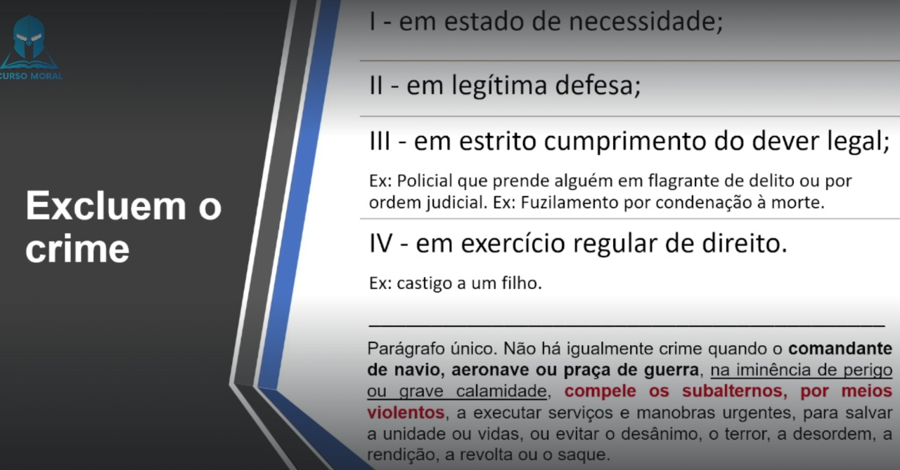

Entende-se em legítima defesa quem, usando moderadamente dos meios
necessários, repele injusta agressão, atual ou iminente, a direito seu ou de outrem.(Art.44)

Considera-se em estado de necessidade quem pratica o fato para preservar
direito seu ou alheio, de perigo certo e atual, que não provocou, nem podia de outro modo evitar, desde que o mal causado, por sua natureza e importância, é consideràvelmente inferior ao mal evitado, e o agente não era legalmente obrigado a arrostar o perigo. (Art. 43)
💡 OBS:
📍 Exclusão do Crime
📍 Mal causado não pode ser superior ao mal evitado
📍 Direito próprio oou alheio
Não é igualmente culpado quem, para proteger direito próprio ou de pessoa a quem está ligado por estreitas relações de parentesco ou afeição, contra perigo certo e atual, que não provocou, nem podia de outro modo evitar, sacrifica direito alheio, ainda quando superior ao direito protegido, desde que não lhe era razoàvelmente exigível conduta diversa.(Art. 39)
💡 OBS:
📍 Exclusão da Culpa
📍 Bem juridico preservado pode ser menor que o bem jurido afetado
📍 Direito próprio ou afiniade
📍 Imputabilidade
📍 Exigência de conduta diferente
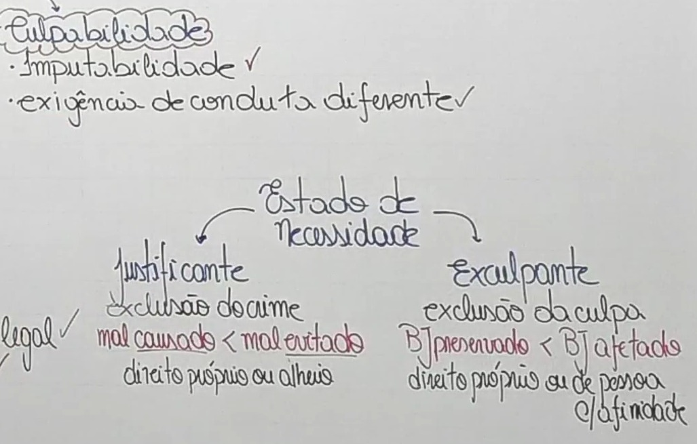
🎥 13. Do Crime- Parte 6
📍 a) sob coação irresistível ou que lhe suprima a faculdade de agir segundo a própria
vontade;
📍 b) em estrita obediência a ordem direta de superior hierárquico, em matéria de serviços. (Assunto de Serviço)
📍 § 1° Responde pelo crime o autor da coação ou da ordem.
📍 § 2° Se a ordem do superior tem por objeto a prática de ato manifestamente criminoso, ou há excesso nos atos ou na forma da execução, é punível também o inferior. (art. 38)

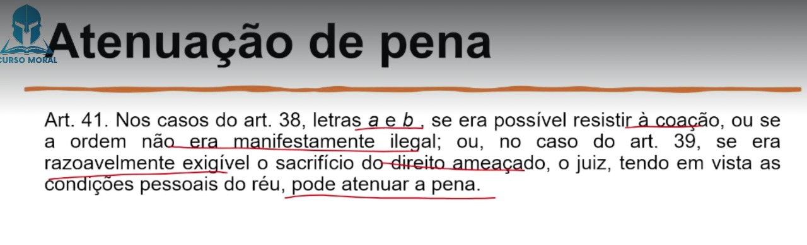
Nos crimes em que há violação do dever militar, o agente não pode invocar
coação irresistível senão quando física ou material. (Art. 40)
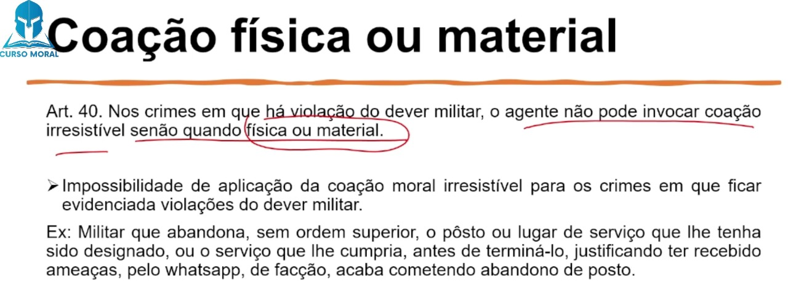

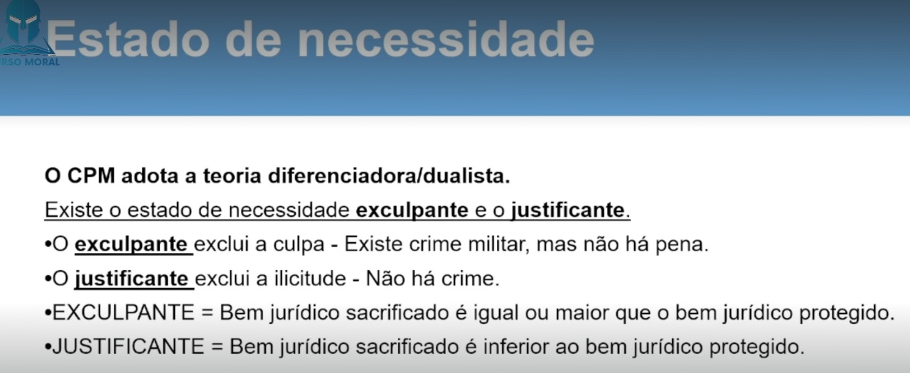
O agente que, em qualquer dos casos de exclusão de crime, excede
culposamente os limites da necessidade, responde pelo fato, se êste é punível, a título de
culpa.(Art.45)
Não é punível o excesso quando resulta de escusável surprêsa ou
perturbação de ânimo, em face da situação.(Art.45, Parágrafo único)

O juiz pode atenuar a pena ainda quando punível o fato por excesso doloso.(Art.46)
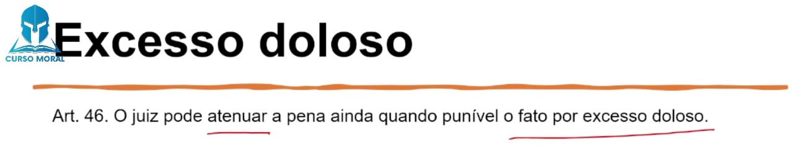
Deixam de ser elementos constitutivos do crime:
📍 I - a qualidade de superior ou a de inferior, quando não conhecida do agente;
📍 II - a qualidade de superior ou a de inferior, a de oficial de dia, de serviço ou de quarto, ou a de sentinela, vigia, ou plantão, quando a ação é praticada em repulsa a agressão.(Art.47)
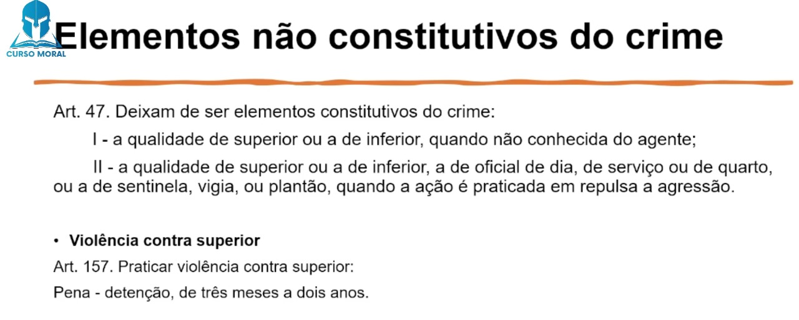

TÍTULO III
DA IMPUTABILIDADE PENAL (Art. 48 ao 52)
🎥 14. Da Imputabilidade

O menor de dezoito anos é inimputável,
salvo se, já tendo completado dezesseis anos, revela suficiente desenvolvimento psíquico para entender o caráter ilícito do fato e determinar-se de acôrdo com êste entendimento. Neste caso, a pena aplicável é diminuída de um têrço até a metade. (Art. 50) (Inconstitucional)
Equiparam-se aos maiores de dezoito anos, ainda que não tenham atingido
essa idade:
📍 a) os militares;
📍 b) os convocados, os que se apresentam à incorporação e os que, dispensados
📍 temporàriamente desta, deixam de se apresentar, decorrido o prazo de licenciamento;
📍 c) os alunos de colégios ou outros estabelecimentos de ensino, sob direção e disciplina
militares, que já tenham completado dezessete anos.
(Art. 51) (Inconstitucional)
Os menores de dezesseis anos, bem como os menores de dezoito e maiores
de dezesseis inimputáveis, ficam sujeitos às medidas educativas, curativas ou disciplinares
determinadas em legislação especial. (Art. 52) (Constitucional)


Não é imputável quem, no momento da ação ou da omissão, não possui a
capacidade de entender o caráter ilícito do fato ou de determinar-se de acôrdo com êsse
entendimento, em virtude de doença mental, de desenvolvimento mental incompleto ou
retardado. (Art. 48)
Se a doença ou a deficiência mental não suprime, mas diminui
consideràvelmente a capacidade de entendimento da ilicitude do fato ou a de
autodeterminação, não fica excluída a imputabilidade, mas a pena pode ser atenuada, sem
prejuízo do disposto no art. 113. (Art. 48, Parágrafo único.)

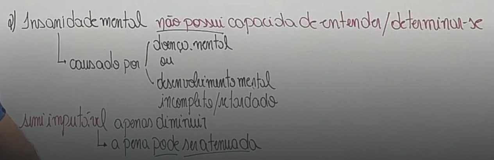
Não é igualmente imputável o agente que, por embriaguez completa
proveniente de caso fortuito ou fôrça maior, era, ao tempo da ação ou da omissão,
inteiramente incapaz de entender o caráter criminoso do fato ou de determinar-se de acôrdo
com êsse entendimento.(Art. 49)
Parágrafo único. A pena pode ser reduzida de um a dois terços, se o agente por embriaguez proveniente de caso fortuito ou fôrça maior, não possuía, ao tempo da ação ou da omissão, a plena capacidade de entender o caráter criminoso do fato ou de determinarse
de acôrdo com êsse entendimento.

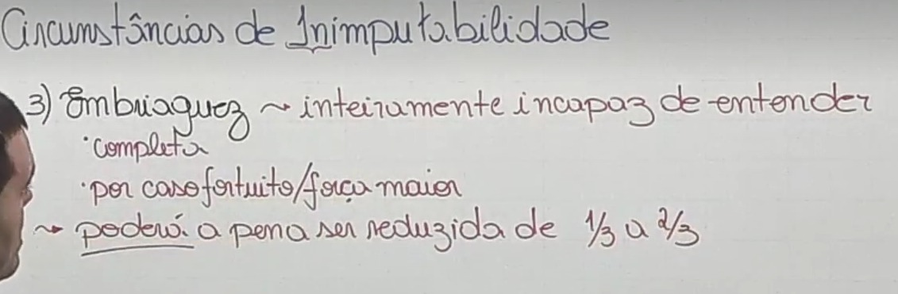
TÍTULO IV
DO CONCURSO DE AGENTES (Art. 53 e 54)
🎥 15. Do Concurso de Agentes
Quem, de qualquer modo, concorre para o crime incide nas penas a êste
cominadas. (Art. 53.)

O crime é sempre único e indivisível (Todos respondem pelo mesmo crime)
A punibilidade de qualquer dos concorrentes é independente da dos outros,
determinando-se segundo a sua própria culpabilidade. Não se comunicam, outrossim, as condições ou circunstâncias de caráter pessoal
, salvo quando elementares do crime.(Art. 53, § 1º)
Ex: Crime de peculato-furto(Típico de servidor público), quando um não servidor comete um crime junto com o servidor, o não servidor responde como se servidor fosse.
A condição pessoal referesse a pessoa, como ser menor, doença mental, etc.
A condição material aconte por exemplo no crime de revolta, se um estiver armado todos respondem.
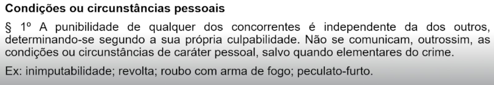
A pena é agravada em relação ao agente que:
📍 I - promove ou organiza a cooperação no crime ou dirige a atividade dos demais
agentes;
📍 II - coage outrem à execução material do crime;
📍 III - instiga ou determina a cometer o crime alguém sujeito à sua autoridade, ou não punível em virtude de condição ou qualidade pessoal;
📍 IV - executa o crime, ou nêle participa, mediante paga ou promessa de recompensa.
(Art. 53, § 2º)
A pena é atenuada com relação ao agente, cuja participação no crime é de
somenos importância.
(Art. 53, § 3º)
📍 Na prática de crime de autoria coletiva necessária, reputam-se cabeças os que
dirigem, provocam, instigam ou excitam a ação.
📍 Quando o crime é cometido por inferiores e um ou mais oficiais, são êstes
considerados cabeças, assim como os inferiores que exercem função de oficial.
(Art. 53, § 4º, 5º)
📍 São os crimes que não podem acontecer somente com um agente, necessitam de 2 ou mais para se concretizar, necessitanto da coletividade. Ex: Motim, Refolta,
📍 Sempre o superior(Oficial) será considerado o Cabeça.
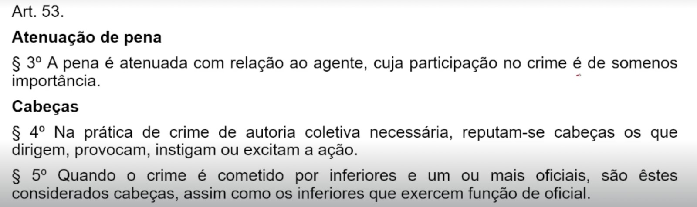
O ajuste, a determinação ou instigação e o auxílio, salvo disposição em
contrário, não são puníveis se o crime não chega, pelo menos, a ser tentado.
(Art. 54)
não são puníveis se o crime não chega, pelo menos, a ser tentado. Salvo disposição em
contrário (Art. 54)


TÍTULO V - DAS PENAS - CAPÍTULO I
DAS PENAS PRINCIPAIS (Art. 55 e 68)
🎥 16. Das Penas - Parte 1
As penas principais são:
a) morte;
b) reclusão;
c) detenção;
d) prisão;
e) impedimento;
f) suspensão do exercício do pôsto, graduação, cargo ou função;
g) reforma. (Art. 55)
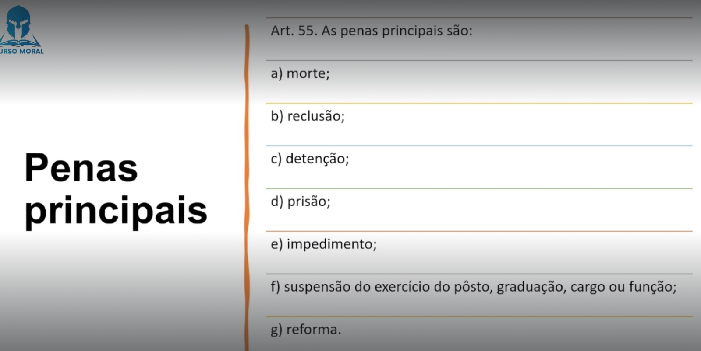
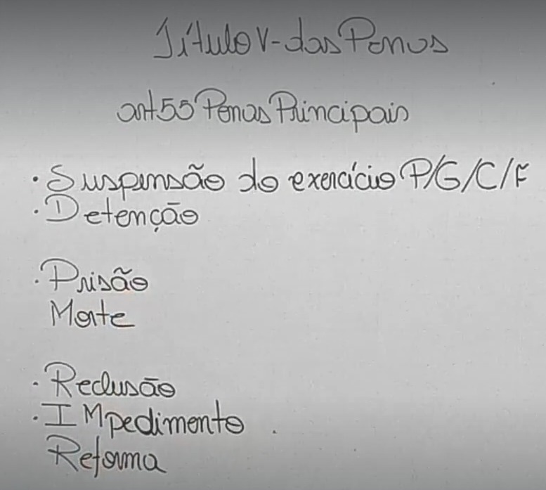
São penas acessórias:
I - a perda de pôsto e patente;
II - a indignidade para o oficialato;
III - a incompatibilidade com o oficialato;
IV - a exclusão das fôrças armadas;
V - a perda da função pública, ainda que eletiva;
VI - a inabilitação para o exercício de função pública;
VII - a suspensão do pátrio poder, tutela ou curatela;
VIII - a suspensão dos direitos políticos.
Pena Acessória depende da pena principal
Ex: O Agente que recebe pena de reclusão ou detenção que ultrpassa 2 anos:
Se Oficial 👉 Perda do Posto e da patente(Acessória)
Se Praça 👉 Exclusão das forças armadas(Acessória)
Se Civil 👉 Perda função pública(Acessória)
(S) Suspensão do exercício do pôsto, graduação, cargo ou função
(D) Detenção
(P) Prisão
(M) Morte
(R) Reclusão
(IM) Impedimento
(R) Reforma
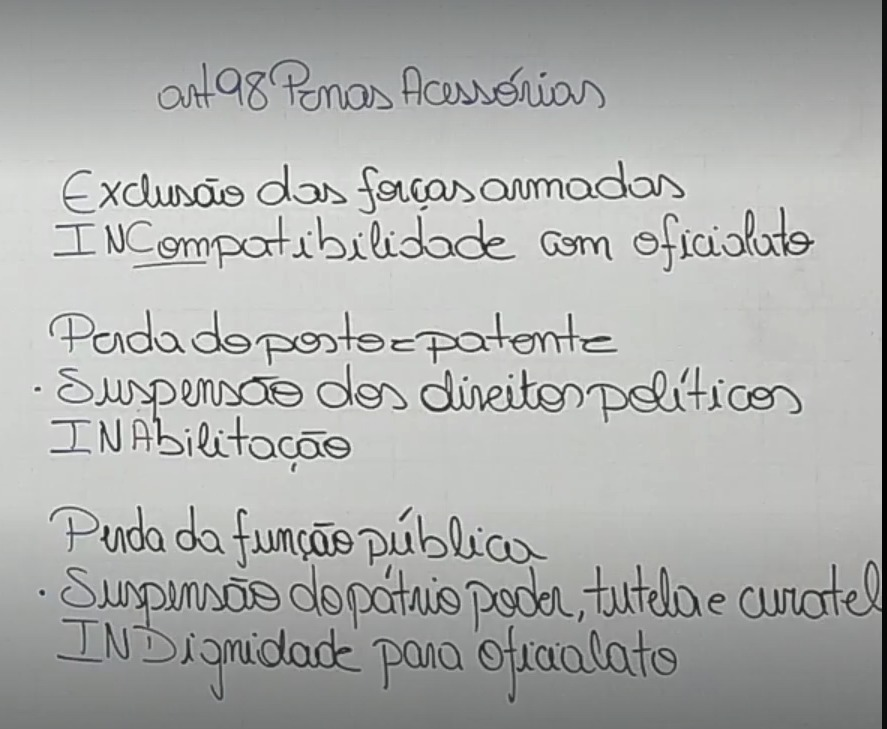
(E) Exclusão das fôrças armadas
(IN) Incompatibilidade com o oficialato
(P) Perda de pôsto e patente
(S) Suspensão dos direitos políticos
(IN) Inabilitação para o exercício de função pública
(P) Perda da função pública, ainda que eletiva
(S) Suspensão do pátrio poder, tutela ou curatela
(IN) Indignidade para o oficialato
💡 Na letra (IN) decora CAD
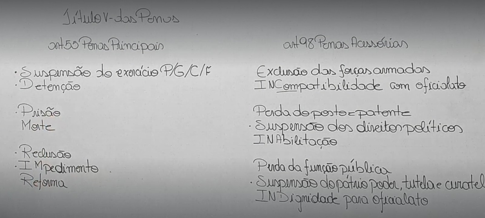
🎥 17. Das Penas - Parte 2
Fuzilamento (Art. 56)
Ex: Traição
Art. 355. Tomar o nacional armas contra o Brasil ou Estado aliado, ou prestar serviço
nas fôrças armadas de nação em guerra contra o Brasil:
Pena - morte, grau máximo; reclusão, de vinte anos, grau mínimo.
A sentença definitiva de condenação à morte é comunicada, logo que passe
em julgado, ao Presidente da República, e não pode ser executada senão depois de sete
dias após a comunicação. (Art. 57)
pode ser imediatamente executada, quando o exigir o interêsse da ordem e da disciplina militares. (Art. 57, Parágrafo único)
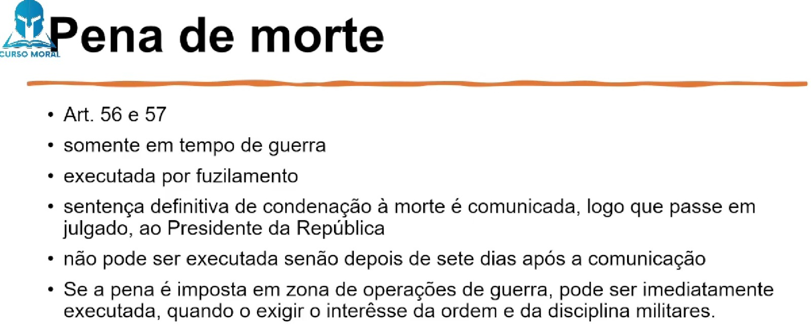

O mínimo da pena de reclusão é de um ano, e o máximo de trinta anos;
O mínimo da pena de detenção é de trinta dias, e o máximo de dez anos. (Art. 58)
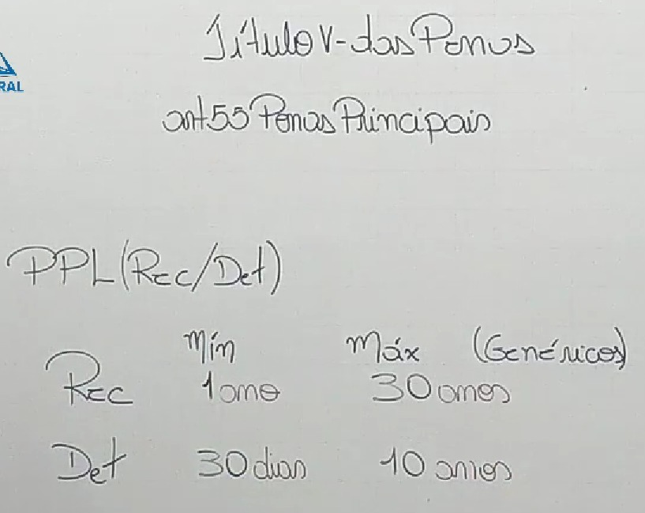
Ex: Art. 205. Matar alguém (Preceito Primário)
Pena: Reclusão de 6 a 20 anos (Preceito Secundário)
Para cada preceito primário, teremos um secundário (Pena com Mínimo e Máximos especificos da pena)
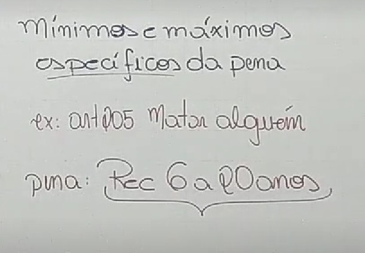
A pena de reclusão ou de detenção até 2 (dois) anos, aplicada a militar, é
convertida em pena de prisão e cumprida, quando não cabível a suspensão condicional: (Redação dada pela Lei nº 6.544, de 30.6.1978)
I - pelo oficial, em recinto de estabelecimento militar;
II - pela praça, em estabelecimento penal militar, onde ficará separada de presos que estejam cumprindo pena disciplinar ou pena privativa de liberdade por tempo superior a dois
anos. (Art. 59)
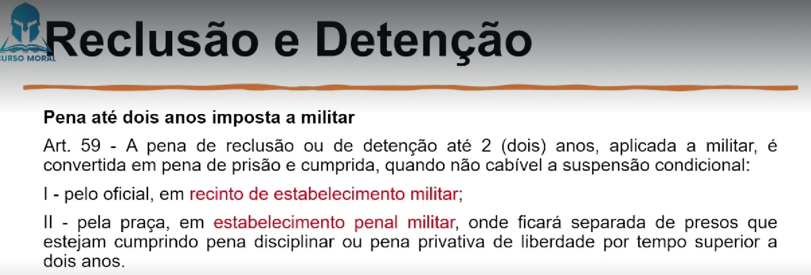
O civil cumpre a pena aplicada pela Justiça Militar,
em estabelecimento prisional civil , ficando ele sujeito ao regime conforme a legislação penal comum, de cujos benefícios e concessões, também, poderá gozar. (Art. 62)
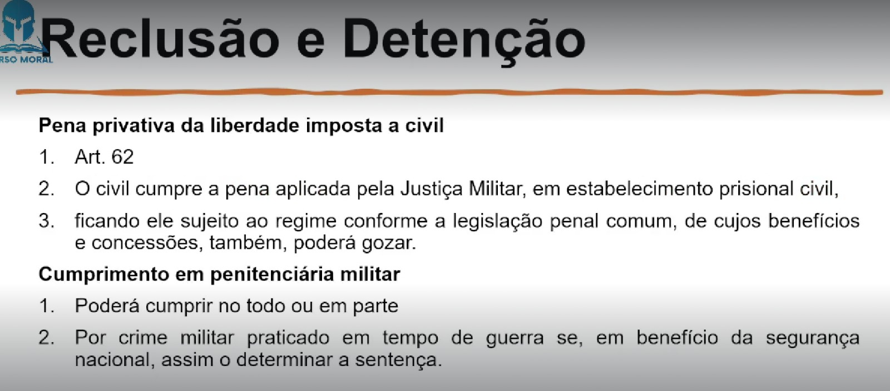
A suspensão condicional da pena privativa de liberdade é uma decisão que procura afastar da pena restritiva de liberdade o condenado não reincidente em crimes dolosos, não perigoso, e que foi condenado a uma pena de curta duração. (Objetivo a extinção da pena)
No CPM nos art. 84 ao 88 tratam do tema.
Quando não cabe o SURSIS:
Ex: Crime práticado em tempo de guerra
Sempre é uma conversão das penas de reclusão ou detenção que não pasaram de 2 anos, quando não cabível a suspensão condicional (SURSIS), somente para militares
A pena privativa da liberdade por mais de 2 (dois) anos, aplicada a militar, é
cumprida em penitenciária militar e, na falta dessa, em estabelecimento prisional civil, ficando o recluso ou detento sujeito ao regime conforme a legislação penal comum, de cujos benefícios e concessões, também, poderá gozar. (Redação dada pela Lei nº
6.544, de 30.6.1978)(Art. 61)
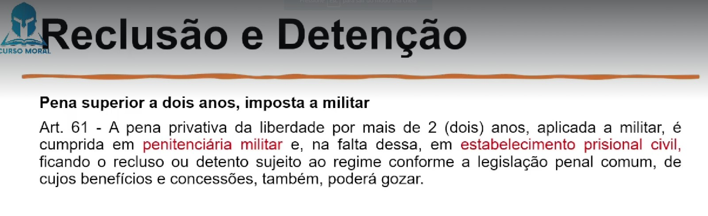
Requisitos
O condenado a pena de reclusão ou de detenção por tempo igual ou superior
a dois anos pode ser liberado condicionalmente, desde que:
I - tenha cumprido:
a) metade da pena, se primário;
b) dois terços, se reincidente;
II - tenha reparado, salvo impossibilidade de fazê-lo, o dano causado pelo crime;
III - sua boa conduta durante a execução da pena, sua adaptação ao trabalho e às
circunstâncias atinentes a sua personalidade, ao meio social e à sua vida pregressa
permitem supor que não voltará a delinqüir.(Art. 89)
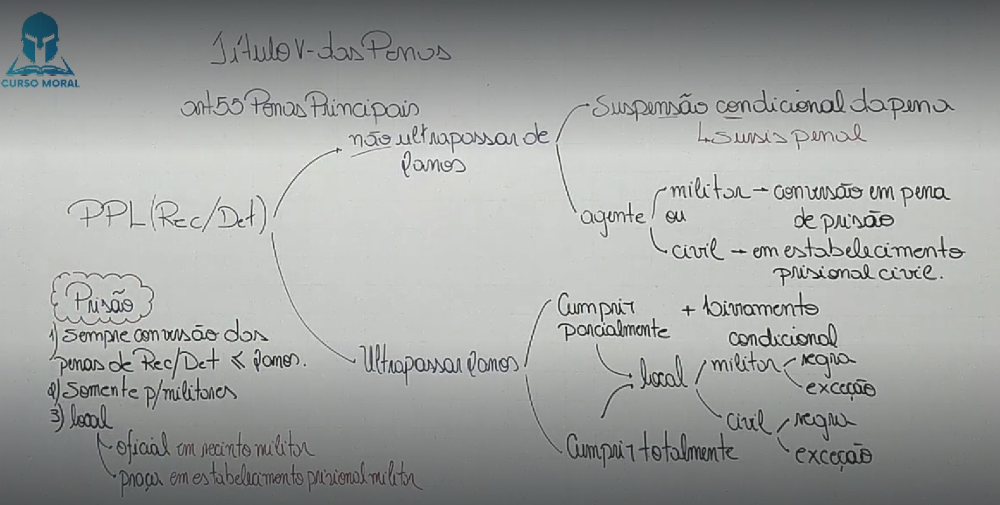
🎥 18. Das Penas - Parte 3
A pena de impedimento sujeita o condenado a permanecer no recinto da
unidade, sem prejuízo da instrução militar. (Art. 63)
💡 (1) Aplicada somente para o crime de insubmissão (Art. 183)
💡 (2) Considerado um crime propriamente militar
💡 (3) Cometido somente por civil
💡 (4) Penda: de 3 meses a 1 ano.
💡 (5) Sem prejuizo de instrução.
💡 (6) Cumprida em recinto militar.
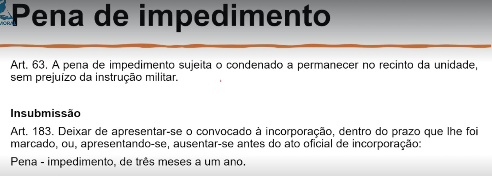
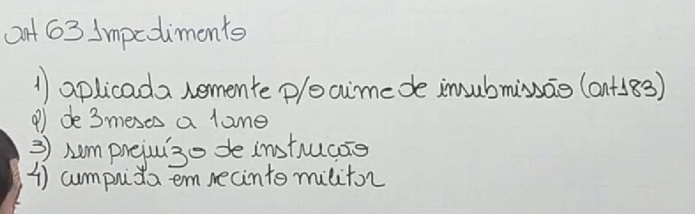
A pena de suspensão do exercício do pôsto, graduação, cargo ou função:
(1)consiste na agregação, no afastamento, no licenciamento ou na disponibilidade do
condenado,
(2) pelo tempo fixado na sentença,
(3) sem prejuízo do seu comparecimento regular à sede do serviço.
(4) Não será contado como tempo de serviço, para qualquer efeito, o do
cumprimento da pena.
(5) Se reserva, reformado ou aposentado: a pena será convertida em pena de detenção, de três meses a um ano.
(6) Não cabe Suspensão condicional (Art. 84)
(Art. 64)
Comerciar o oficial da ativa, ou tomar parte na administração ou gerência de
sociedade comercial, ou dela ser sócio ou participar, exceto como acionista ou cotista em
sociedade anônima, ou por cotas de responsabilidade limitada:
Pena - suspensão do exercício do pôsto, de seis meses a dois anos, ou reforma. (Art. 204)
💡 Não engloba os praças
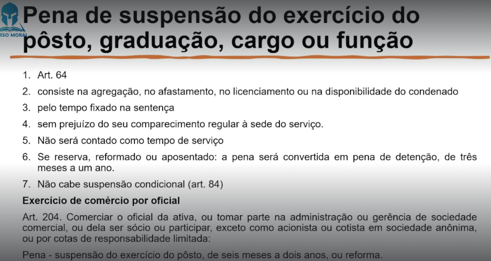
A pena de reforma sujeita o condenado à situação de inatividade, não podendo
perceber mais de um vinte e cinco avos do sôldo, por ano de serviço, nem receber
importância superior à do sôldo. (Art. 65)
💡 (1) Situação de Inatividade
💡 (2) Definitivamente dispensado do serviço ativo
💡 (3) Não oderá ser convocado
💡 (4) Com remuneração proporcional
💡 (5) A cada ano de trabalho 1/25 do soldo, limitado ao soldo.(25/25 = 1)
💡 (6) Não cabe Suspensão condicional (Art. 84)
💡 (6) Espécies
📍 Não punitivas
(1) Idade(65 anos) ou (70 anos) o Revertido
(2) Incapacidade definitiva
📍 Punitivas
(1) Administrativa (Infração disciplinar)
(2) Penal (Crime)
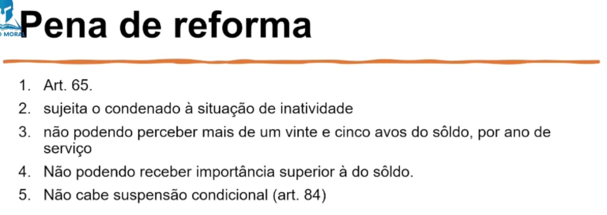
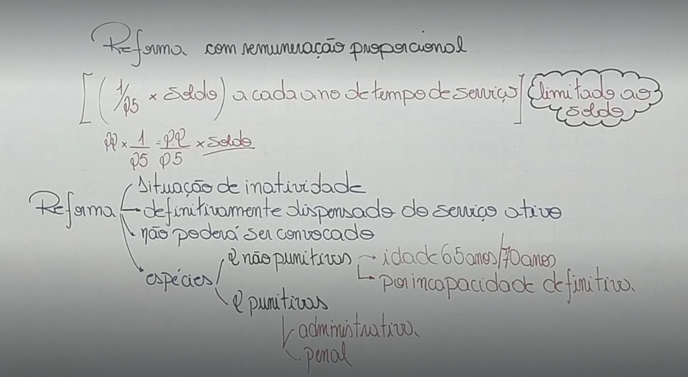
O condenado a que sobrevenha doença mental deve ser recolhido a manicômio
judiciário ou, na falta dêste, a outro estabelecimento adequado, onde lhe seja assegurada
custódia e tratamento. (Art. 66)
Computam-se na pena privativa de liberdade o tempo de prisão provisória, no
Brasil ou no estrangeiro, e o de internação em hospital ou manicômio, bem como o excesso
de tempo, reconhecido em decisão judicial irrecorrível, no cumprimento da pena, por outro
crime, desde que a decisão seja posterior ao crime de que se trata.
Transferência de condenados (Art. 67)
O condenado pela Justiça Militar de uma região, distrito ou zona pode cumprir
pena em estabelecimento de outra região, distrito ou zona. (Art. 68)
TÍTULO V - DAS PENAS - CAPÍTULO II
DA APLICAÇÃO DA PENA (Art. 69 e 83)
🎥 19. Das Penas - Parte 4
Para fixação da pena privativa de liberdade, o juiz aprecia a gravidade do crime
praticado e a personalidade do réu, devendo ter em conta a intensidade do dolo ou grau da
culpa, a maior ou menor extensão do dano ou perigo de dano, os meios empregados, o
modo de execução, os motivos determinantes, as circunstâncias de tempo e lugar, os
antecedentes do réu e sua atitude de insensibilidade, indiferença ou arrependimento após o
crime. (Art. 69)
Determinação da pena: § 1º Se são cominadas penas alternativas, o juiz deve determinar qual delas é aplicável.
Limites legais da pena: § 2º Salvo o disposto no art. 76, é fixada dentro dos limites legais a quantidade da pena aplicável.
💡 Fase (1) Fixa a pena: Analise das circunstâncias Juduciais. (Art. 69)
💡 Fase (2) Agravantes e Atenuantes: Análise das circunstâncias. De 1/5 a 1/3 Quantum de
atenuaão ou agravação pode o juiz usar. (Art. 70 e 72)
💡 Fase (3) Majorantes e minorantes (Pode romper os limites de pena, respeitando somente o genérico.)
Só pode ser usado agravante se o crime não for qualificado.
Ex: Art. 205. Homicídio Simples, Pena de reclusão de 6 a 20 anos. Se for qualificado de 12 a 30 anos
Sistema Trifásico da Pena
Fase (1) Juiz Fixa a pena: 15 anos.
Fase (2) Verifica as Atenuantes e Agravantes: 1/3 => 15 + 5 = 20
Fase (3) Majorantes e minorantes (Pode romper os limites de pena, respeitando somente o genérico.)
Art. 70 São circunstâncias que sempre agravam a pena, quando não integrantes ou
qualificativas do crime:
💡 I - a reincidência;
💡 II - ter o agente cometido o crime:
📍 a) por motivo fútil ou torpe;
📍 b) para facilitar ou assegurar a execução, a ocultação, a impunidade ou vantagem de
outro crime;
📍 c) depois de embriagar-se, salvo se a embriaguez decorre de caso fortuito, engano ou fôrça maior;
📍 d) à traição, de emboscada, com surprêsa, ou mediante outro recurso insidioso que
dificultou ou tornou impossível a defesa da vítima;
📍 e) com o emprêgo de veneno, asfixia, tortura, fogo, explosivo, ou qualquer outro meio
dissimulado
📍 f) contra ascendente, descendente, irmão ou cônjuge;
📍 g) com abuso de poder ou violação de dever inerente a cargo, ofício, ministério ou
profissão;
📍 h) contra criança, velho ou enfêrmo;
📍 i) quando o ofendido estava sob a imediata proteção da autoridade;
📍 j) em ocasião de incêndio, naufrágio, encalhe, alagamento, inundação, ou qualquer
calamidade pública, ou de desgraça particular do ofendido;
📍 l) estando de serviço;
📍 m) com emprêgo de arma, material ou instrumento de serviço, para êsse fim procurado;
📍 n) em auditório da Justiça Militar ou local onde tenha sede a sua administração;
📍 o) em país estrangeiro.
💡 Parágrafo único. As circunstâncias das letras c , salvo no caso de embriaguez
preordenada, l , m e o , só agravam o crime quando praticado por militar.
Quando a lei determina a agravação ou atenuação da pena sem mencionar
o quantum , deve o juiz fixá-lo entre um quinto e um têrço, guardados os limites da pena
cominada ao crime. (Art. 73)
Verifica-se a reincidência quando o agente comete nôvo crime, depois de
transitar em julgado a sentença que, no país ou no estrangeiro, o tenha condenado por crime
anterior. (Art. 71)
Não se toma em conta, para efeito da reincidência, a condenação anterior, se,
entre a data do cumprimento ou extinção da pena e o crime posterior, decorreu período de
tempo superior a cinco anos. (Art. 71, § 1º)
💡 Motivo fútil é aquele insignificante, flagrantemente desproporcional ou inadequado se cotejado com a ação ou a omissão do agente.
💡 Torpe é o motivo abjeto, indigno e desprezível, que repugna ao mais elementar sentimento ético.
💡 Contra ascendente: Parente para cima (pais, avós, bisavós)
💡 Descententes: Parentes para baixo (Filhos netos, bisnetos)
💡 Irmão ou Cônjugue: Parentes laterais
Para efeito da reincidência, não se consideram os crimes anistiados. (Art.71, § 2º)
🎥 20. Das Penas - Parte 5
São circunstâncias que sempre atenuam a pena:
💡 I - ser o agente menor de vinte e um ou maior de setenta anos;
💡 II - ser meritório seu comportamento anterior;
💡 III - ter o agente:
📍 a) cometido o crime por motivo de relevante valor social ou moral;
📍 b) procurado, por sua espontânea vontade e com eficiência, logo após o crime, evitarlhe
ou minorar-lhe as conseqüências, ou ter, antes do julgamento, reparado o dano;
📍 c) cometido o crime sob a influência de violenta emoção, provocada por ato injusto da vítima;
📍 d) confessado espontâneamente, perante a autoridade, a autoria do crime, ignorada ou
imputada a outrem;
📍 e) sofrido tratamento com rigor não permitido em lei. "Não atendimento de atenuantes"
💡 Parágrafo único. Nos crimes em que a pena máxima cominada é de morte, ao juiz é
facultado atender, ou não, às circunstâncias atenuantes enumeradas no artigo. (Art. 72)
Quando ocorre mais de uma agravante ou mais de uma atenuante, o juiz poderá
limitar-se a uma só agravação ou a uma só atenuação.(Art. 74)
No concurso de agravantes e atenuantes, a pena deve aproximar-se do limite
indicado pelas circunstâncias preponderantes, entendendo-se como tais as que resultam
dos motivos determinantes do crime, da personalidade do agente, e da reincidência. Se há
equivalência entre umas e outras, é como se não tivessem ocorrido. (Art. 75)
Quando a lei prevê causas especiais de aumento ou diminuição da pena, não
fica o juiz adstrito aos limites da pena cominada ao crime, senão apenas aos da espécie de
pena aplicável (art. 58).
Parágrafo único. No concurso dessas causas especiais, pode o juiz limitar-se a um só
aumento ou a uma só diminuição, prevalecendo, todavia, a causa que mais aumente ou
diminua. (Art. 76)
A pena que tenha de ser aumentada ou diminuída, de quantidade fixa ou dentro
de determinados limites, é a que o juiz aplicaria, se não existisse a circunstância ou causa
que importa o aumento ou diminuição. (Art. 77)
Em se tratando de criminoso habitual ou por tendência, a pena a ser imposta
será por tempo indeterminado. O juiz fixará a pena correspondente à nova infração penal,
que constituirá a duração mínima da pena privativa da liberdade, não podendo ser, em caso
algum, inferior a três anos. (Art. 78)
A duração da pena indeterminada não poderá exceder a dez anos, após o
cumprimento da pena imposta. (Art. 78, § 1º)
Considera-se criminoso habitual aquêle que:
a) reincide pela segunda vez na prática de crime doloso da mesma natureza, punível
com pena privativa de liberdade em período de tempo não superior a cinco anos, descontado
o que se refere a cumprimento de pena; (Art. 78, § 2º, letra A)
b) embora sem condenação anterior, comete sucessivamente, em período de tempo
não superior a cinco anos, quatro ou mais crimes dolosos da mesma natureza, puníveis com
pena privativa de liberdade, e demonstra, pelas suas condições de vida e pelas
circunstâncias dos fatos apreciados em conjunto, acentuada inclinação para tais crimes.(Art. 78, § 2º, letra B)
§ 3º Considera-se criminoso por tendência aquêle que comete homicídio, tentativa de
homicídio ou lesão corporal grave, e, pelos motivos determinantes e meios ou modo de
execução, revela extraordinária torpeza, perversão ou malvadez. (Art. 78, § 3º)
§ 4º Fica ressalvado, em qualquer caso, o disposto no art. 113. (Art. 78, § 4º)
Art. 113. Quando o condenado se enquadra no parágrafo único do art. 48 e necessita
de especial tratamento curativo, a pena privativa de liberdade pode ser substituída pela
internação em estabelecimento psiquiátrico anexo ao manicômio judiciário ou ao
estabelecimento penal, ou em seção especial de um ou de outro.
Consideram-se crimes da mesma natureza os previstos no mesmo dispositivo
legal, bem como os que, embora previstos em dispositivos diversos, apresentam, pelos fatos
que os constituem ou por seus motivos determinantes, caracteres fundamentais comuns. (Art. 78, § 5º)
Quando o agente, mediante uma só ou mais de uma ação ou omissão, pratica
dois ou mais crimes, idênticos ou não, as penas privativas de liberdade devem ser unificadas.
Se as penas são da mesma espécie, a pena única é a soma de tôdas; se, de espécies
diferentes, a pena única e a mais grave, mas com aumento correspondente à metade do
tempo das menos graves, ressalvado o disposto no art. 58. (Art. 79)
💡 Ex: O militar faz um disparo e arma de fogo(Consurso formal) e atinge duas pessoas, reponde pelo dolo da primeira vítima e culpa pela a segunda, são duas penas, mais o juiz unifica as penas, a pena do dolo + a 1/2 da pena de culpa. Se fosse as duas dolosas seria a soma das duas.
Aplica-se a regra do artigo anterior, quando o agente,
mediante mais de uma ação ou omissão, pratica dois ou mais crimes da mesma espécie
e, pelas condições de
tempo, lugar, maneira de execução e outras semelhantes, devem os subseqüentes ser
considerados como continuação do primeiro.
Parágrafo único. Não há crime continuado quando se trata de fatos ofensivos de bens
jurídicos inerentes à pessoa, salvo se as ações ou omissões sucessivas são dirigidas contra
a mesma vítima. (Art. 80)
A pena unificada não pode ultrapassar de trinta anos, se é de reclusão, ou de
quinze anos, se é de detenção. (Art. 81)
A pena unificada pode ser diminuída de um sexto a um quarto, no caso de unidade
de ação ou omissão, ou de crime continuado. (Art. 81, § 1º)
Quando cominada a pena de morte como grau máximo e a de reclusão como grau
mínimo, aquela corresponde, para o efeito de graduação, à de reclusão por trinta anos.(Art. 81, § 2º)
Nos crimes punidos com a pena de morte, esta corresponde à de reclusão por
trinta anos, para cálculo da pena aplicável à tentativa, salvo disposição especial. (Art. 81, § 3º)
Quando se apresenta o caso do art. 78, § 2º, letra b , fica sem aplicação o
disposto quanto ao concurso de crimes idênticos ou ao crime continuado. (Art. 82)
As penas não privativas de liberdade são aplicadas distinta e integralmente,
ainda que previstas para um só dos crimes concorrentes. (Art. 83)
TÍTULO V - DAS PENAS - CAPÍTULO III
DA SUSPENSÃO CONDICIONAL DA PENA (SURSIS) (Art. 84 e 88)
🎥 21. Das Penas - Parte 6
A execução da pena privativa da liberdade, não superior a 2 (dois) anos, pode
ser suspensa, por 2 (dois) anos a 6 (seis) anos, desde que:
💡 I - o sentenciado não haja sofrido no País ou no estrangeiro, condenação irrecorrível por outro crime a pena privativa da liberdade, salvo o disposto no 1º do art. 71;
💡 II - os seus antecedentes e personalidade, os motivos e as circunstâncias do crime, bem como sua conduta posterior, autorizem a presunção de que não tornará a delinqüir. (Art. 84)
Não se aplica a penas acessórias
Não se aplica a crimes em tempo de guerra
Não se aplica a alguns crimes em tempo de paz
A suspensão não se estende às penas de reforma, suspensão do
exercício do pôsto, graduação ou função ou à pena acessória, nem exclui a aplicação de
medida de segurança não detentiva. (Art. 84, Parágrafo único)
A sentença deve especificar as condições a que fica subordinada a suspensão. (Art. 85)
Ex: O Agente não poder frequentar lugares como rstarantes, estádio de futebol, etc...
A suspensão condicional da pena não se aplica:
💡 I I - ao condenado por crime cometido em tempo de guerra;
💡 I II - em tempo de paz:
a) por crime contra a segurança nacional, de aliciação e incitamento, de violência contra
superior, oficial de dia, de serviço ou de quarto, sentinela, vigia ou plantão, de desrespeito a
superior, de insubordinação, ou de deserção;
b) pelos crimes previstos nos arts. 160, 161, 162, 235, 291 e seu parágrafo único, ns. I
a IV.(Art. 88)
🎥 22. Das Penas - Parte 7
A suspensão é revogada se, no curso do prazo, o beneficiário:
💡 I - é condenado, por sentença irrecorrível, na Justiça Militar ou na comum, em razão de
crime, ou de contravenção reveladora de má índole ou a que tenha sido imposta pena
privativa de liberdade;
💡 II - não efetua, sem motivo justificado, a reparação do dano;
💡 III - sendo militar, é punido por infração disciplinar considerada grave. (Art. 86.)
NÃO(R): Ressarcimento ao dano
NÃO(C): Condenação por Crime(Comum ou Militar) ou contravenção
NÃO(P): Punição disciplinar por transgrassão grave.
A suspensão pode ser também revogada, se o condenado deixa de cumprir
qualquer das obrigações constantes da sentença.
Prorrogação de prazo. (Art. 86, § 1º)
§ 2º Quando facultativa a revogação, o juiz pode, ao invés de decretá-la, prorrogar o
período de prova até o máximo, se êste não foi o fixado.
§ 3º Se o beneficiário está respondendo a processo que, no caso de condenação, pode
acarretar a revogação, considera-se prorrogado o prazo da suspensão até o julgamento
definitivo.
Se o prazo expira sem que tenha sido revogada a suspensão, fica extinta a
pena privativa de liberdade. (Art. 87)
TÍTULO V - DAS PENAS - CAPÍTULO IV
DO LIVRAMENTO CONDICIONAL (Art. 89 e 97)
🎥 23. Das Penas - Parte 8
O condenado a pena de reclusão ou de detenção por tempo igual ou superior
a dois anos pode ser liberado condicionalmente, desde que:
💡 I - tenha cumprido:
a) metade da pena, se primário;
b) dois terços, se reincidente;
💡 II - tenha reparado, salvo impossibilidade de fazê-lo, o dano causado pelo crime;
💡 III - sua boa conduta durante a execução da pena, sua adaptação ao trabalho e às
circunstâncias atinentes a sua personalidade, ao meio social e à sua vida pregressa
permitem supor que não voltará a delinqüir. (Art. 89)
Não se aplica aos crimes em tempo de guerra.
No caso de condenação por infrações penais em concurso, deve ter-se em conta
a pena unificada. (Art. 89, § 1º)
Se o condenado é primário e menor de vinte e um ou maior de setenta anos, o
tempo de cumprimento da pena pode ser reduzido a um têrço. (Art. 89, § 2º)
A sentença deve especificar as condições a que fica subordinado o livramento. (Art. 90)
O livramento somente se concede mediante parecer do Conselho Penitenciário,
ouvidos o diretor do estabelecimento em que está ou tenha estado o liberando e o
representante do Ministério Público da Justiça Militar; e, se imposta medida de segurança
detentiva, após perícia conclusiva da não periculosidade do liberando.(Art. 91)
O liberado fica sob observação cautelar e proteção realizadas por patronato
oficial ou particular, dirigido aquêle e inspecionado êste pelo Conselho Penitenciário. Na falta
de patronato, o liberado fica sob observação cautelar realizada por serviço social
penitenciário ou órgão similar. (Art. 92)
Revoga-se o livramento, se o liberado vem a ser condenado, em sentença
irrecorrível, a penal privativa de liberdade:
💡 I - por infração penal cometida durante a vigência do benefício; (não conta para descontar a pena)
💡 II - por infração penal anterior, salvo se, tendo de ser unificadas as penas, não fica
prejudicado o requisito do art. 89, nº I, letra a (Conta o tempo na pena) (Art. 93)
O juiz pode, também, revogar o livramento se o liberado deixa de cumprir qualquer
das obrigações constantes da sentença ou é irrecorrìvelmente condenado, por motivo de
contravenção, a pena que não seja privativa de liberdade; ou, se militar, sofre penalidade
por transgressão disciplinar considerada grave. (Art. 93, § 1º)
Para os efeitos da revogação obrigatória, são tomadas, também, em consideração,
nos têrmos dos ns. I e II dêste artigo, as infrações sujeitas à jurisdição penal comum; e,
igualmente, a contravenção compreendida no § 1º, se assim, com prudente arbítrio, o
entender o juiz. (Art. 93, § 2º)
Revogado o livramento, não pode ser novamente concedido e, salvo quando a
revogação resulta de condenação por infração penal anterior ao benefício, não se desconta
na pena o tempo em que estêve sôlto o condenado. (Art. 94)
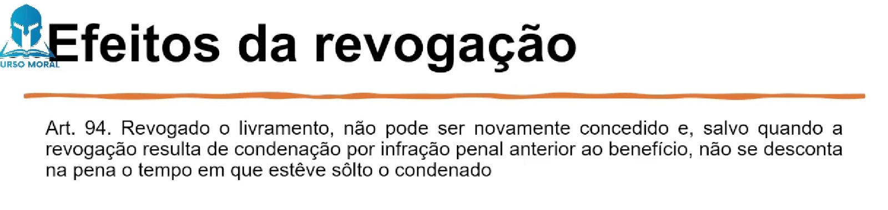
Se, até o seu têrmo, o livramento não é revogado, considera-se extinta a pena
privativa de liberdade.
Parágrafo único. Enquanto não passa em julgado a sentença em processo, a que
responde o liberado por infração penal cometida na vigência do livramento, deve o juiz
abster-se de declarar a extinção da pena. (Art. 95)
O livramento condicional não se aplica ao condenado por crime cometido em
tempo de guerra. (Art. 96)
Em tempo de paz, o livramento condicional por crime contra a
segurança
externa do país, ou de revolta, motim, aliciação e incitamento, violência contra superior ou
militar de serviço, só será concedido após o cumprimento de dois terços da pena, observado
ainda o disposto no art. 89, preâmbulo, seus números II e III e §§ 1º e 2º. (Art. 97)
TÍTULO V - DAS PENAS - CAPÍTULO V
DAS PENAS ACESSÓRIAS (Art. 89 e 97)
🎥 24. Das Penas - Parte 9
I - a perda de pôsto e patente;
II - a indignidade para o oficialato;
III - a incompatibilidade com o oficialato;
IV - a exclusão das fôrças armadas;
V - a perda da função pública, ainda que eletiva;
VI - a inabilitação para o exercício de função pública;
VII - a suspensão do pátrio poder, tutela ou curatela;
VIII - a suspensão dos direitos políticos. (Art.98)
(E) Exclusão das fôrças armadas
(IN) Incompatibilidade com o oficialato
(P) Perda de pôsto e patente
(S) Suspensão dos direitos políticos
(IN) Inabilitação para o exercício de função pública
(P) Perda da função pública, ainda que eletiva
(S) Suspensão do pátrio poder, tutela ou curatela
(IN) Indignidade para o oficialato
💡 Na letra (IN) decora CAD
Salvo os casos dos arts. 99, 103, nº II, e 106, a imposição da pena acessória deve constar expressamente da sentença. (Art. 107)
Nota: Salvo essas 3.
Perda de pôsto e patente;
Suspensão dos direitos políticos;
Perda da função pública, ainda que eletiva;
Penas principais não, uma pena para cada contuda, nas acessórias poem acumular.
Equipara-se à função pública a que é exercida em emprêsa pública,
autarquia, sociedade de economia mista, ou sociedade de que participe a União, o Estado
ou o Município como acionista majoritário. (Art. 98, Parágrafo único.)
A perda de pôsto e patente resulta da condenação a pena privativa de liberdade
por tempo superior a dois anos, e importa a perda das condecorações. (Art. 99)
Nota: Aplicada ao oficial
A condenação da praça a pena privativa de liberdade, por tempo superior a
dois anos, importa sua exclusão das fôrças armadas. (Art. 102)
Nota: Somente para praças
Fica sujeito à declaração de indignidade para o oficialato o militar condenado,
qualquer que seja a pena, nos crimes de traição, espionagem ou covardia, ou em qualquer
dos definidos nos arts. 161, 235, 240, 242, 243, 244, 245, 251, 252, 303, 304, 311 e 312. (Art. 100)
Nota: Somente para oficail
Fica sujeito à declaração de incompatibilidade com o oficialato o militar
condenado nos crimes dos arts. 141 e 142. (Art. 101)
Incorre na perda da função pública o assemelhado ou o civil:
I - condenado a pena privativa de liberdade por crime cometido com abuso de poder ou
violação de dever inerente à função pública;
II - condenado, por outro crime, a pena privativa de liberdade por mais de dois anos.
Parágrafo único. O disposto no artigo aplica-se ao militar da reserva, ou reformado, se
estiver no exercício de função pública de qualquer natureza.(Art. 103)
Incorre na inabilitação para o exercício de função pública, pelo prazo de dois
até vinte anos, o condenado a reclusão por mais de quatro anos, em virtude de crime
praticado com abuso de poder ou violação do dever militar ou inerente à função pública. (Art. 104)
Parágrafo único. O prazo da inabilitação para o exercício de função pública começa ao
têrmo da execução da pena privativa de liberdade ou da medida de segurança imposta em
substituição, ou da data em que se extingue a referida pena. (Art. 104)
O condenado a pena privativa de liberdade por mais de dois anos, seja qual
fôr o crime praticado, fica suspenso do exercício do pátrio poder, tutela ou curatela, enquanto
dura a execução da pena, ou da medida de segurança imposta em substituição (art. 113). (Art. 105)
Parágrafo único. Durante o processo pode o juiz decretar a suspensão provisória do
exercício do pátrio poder, tutela ou curatela. (Art. 105)
Durante a execução da pena privativa de liberdade ou da medida de
segurança ìmposta em substituição, ou enquanto perdura a inabilitação para função pública,
o condenado não pode votar, nem ser votado. (Art. 106)
Salvo os casos dos arts. 99, 103, nº II, e 106, a imposição da pena acessória
deve constar expressamente da sentença. (Art. 107)
Computa-se no prazo das inabilitações temporárias o tempo de liberdade
resultante da suspensão condicional da pena ou do livramento condicional, se não sobrevém
revogação. (Art. 108)
TÍTULO V - DAS PENAS - CAPÍTULO VI
DOS EFEITOS DA CONDENAÇÃO (Art. 109)
Art. 109. São efeitos da condenação:
I - tornar certa a obrigação de reparar o dano resultante do crime; (Art. 109)
II - a perda, em favor da Fazenda Nacional, ressalvado o direito do lesado ou de terceiro
de boa-fé:
a) dos instrumentos do crime, desde que consistam em coisas cujo fabrico, alienação,
uso, porte ou detenção constitua fato ilícito;
b) do produto do crime ou de qualquer bem ou valor que constitua proveito auferido
pelo agente com a sua prática. (Art. 109)